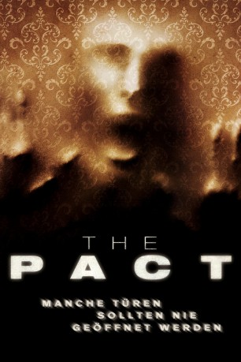
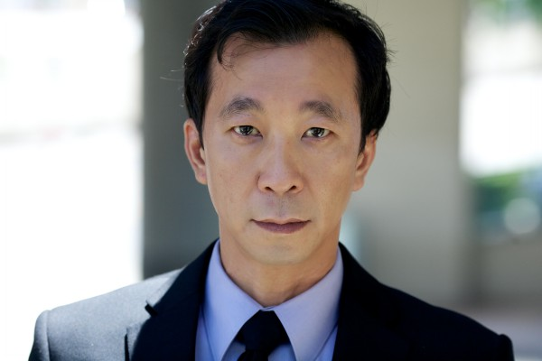

#7166 The Pact
 
 IMDB-Wertung: 5.8 / 10
IMDB-Wertung: 5.8 / 10  Metascore: 0
Metascore: 0 
Nachdem Annie und ihre Schwester vom plötzlichen Tod ihrer sadistisch veranlagten Mutter erfahren zieht es die beiden Geschwister, trotz arger Bedenken, zurück in das mütterliche Anwesen, einem kleinen Haus am Rande der Stadt. Doch mit dem Eintreffen der jüngeren Schwester Annie geschehen plötzlich seltsame Dinge. Nicht nur, dass die Ärmste von einer unheimliche Präsens attackiert und durch das mütterliche Heim geschleudert wird, auch von ihrer älteren Schwester fehlt weit und breit jegliche Spur. Als Annie , nach diversen Albträumen und unerklärlichen Visionen allmählich nach Erklärungen für die seltsamen Vorkommnisse forscht, stößt sie auf die Spur eines Geistes, der zwangsläufig mit der verunsicherten Frau Kontakt aufnehmen möchte …
Jahr: 2012
Dauer: 88 Minuten
FSK: 16
Land: USA Studio: IFC MidnightTonspuren: DTS - ,
Untertitel: Deutsch,
Auflösung: 720p (1280x688) Größe: 2764 MB
Genre: Thriller, Horror, Mystery
Regisseur: Nicholas McCarthy
Drehbuch: Li Fu
Soundtrack:
Darsteller:
 Caity Lotz als Annie
Caity Lotz als Annie Kathleen Rose Perkins als Liz
Kathleen Rose Perkins als Liz- Haley Hudson als Stevie
- Sam Ball als Giles
 Mark Steger als Charles Barlow / Judas
Mark Steger als Charles Barlow / Judas- Agnes Bruckner als Nichole
 Casper Van Dien als Creek
Casper Van Dien als Creek- Dakota Bright als Eva
- Petra Wright als Jennifer Glick
- Anjini Taneja Azhar als Hindi Child
- Rachael Kahne als Waitress
- Boriana Williams als Child
- Bo Barrett als Jesse , uncredited
- Jeffrey T Ferguson als Officer Benson , uncredited
-  Ho-Kwan Tse als Rudy Fong , uncredited
- Sam Zuckerman als County Clerk
- Santiago Segura als Dishwasher , uncredited
Datei: X:\2012(N-Z)\Pact, The (2012, FSK16, 1280x688).mkv seit 02.10.2017
Festplatte: HD 2012(N-Z)-2013(A-H)
 Es gibt insgesamt 138 Filme in der Gruppe '2012(N-Z)'
Es gibt insgesamt 138 Filme in der Gruppe '2012(N-Z)'